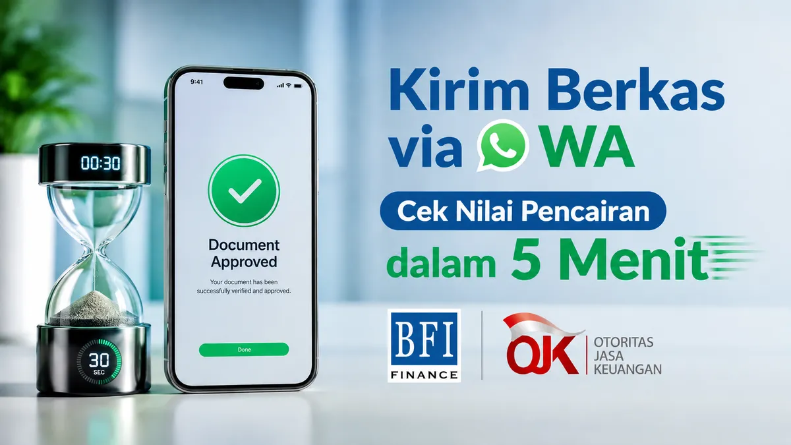

Saat menghadapi situasi mendesak seperti tambahan modal usaha yang berputar cepat, biaya renovasi rumah, atau urusan kesehatan, hal pertama yang Anda butuhkan adalah kepastian waktu. Pertanyaan seperti "Berapa jam uangnya bisa masuk rekening?" menjadi sangat krusial.
Di marketplace pembiayaan, program gadai bpkb mobil langsung cair merupakan solusi favorit karena plafon dana yang besar namun dengan suku bunga yang jauh lebih terjangkau dibanding instrumen pinjaman lain. Sebagai mitra terpercaya Anda, mari kita bedah secara transparan bagaimana proses pencairan BFI Finance berjalan dari menit pertama Anda mengajukan data.
Skema Timeline Resmi Proses Pencairan BFI Finance
Secara umum, jika seluruh dokumen lengkap dan kondisi unit kendaraan sesuai standar, total waktu dari pengisian formulir hingga dana ditransfer hanya memakan waktu 1 hingga maksimal 2 hari kerja. Berikut rincian fasenya:
Menit 0 - 15 (Pengisian Formulir): Anda mengisi data nama, nomor HP, wilayah, dan tipe mobil pada formulir digital di website kami.
Menit 15 - 45 (Telepon Konfirmasi): Tim telesales resmi akan menghubungi Anda untuk melakukan verifikasi data awal, menghitung simulasi nilai pencairan kotor, dan mencocokkan jadwal kunjungan.
Hari ke-1 (Survei Fisik & Berkas): Tim petugas lapangan (Surveyor) resmi BFI datang ke domisili Anda untuk mengecek kecocokan nomor rangka/mesin mobil serta mengambil foto dokumen persyaratan asli (KTP, KK, STNK).
Hari ke-1 atau ke-2 (Analisis & Persetujuan Kredit): Data survei diproses ke komite kredit. Jika disetujui, Anda akan menerima kontrak persetujuan resmi (PKS) mengenai nilai bersih pencairan dana Anda.
Fase Akhir (Pencairan Dana Langsung Cair): Anda menyerahkan BPKB asli ke kantor cabang terdekat untuk disimpan secara aman, dan dalam hitungan jam, dana pinjaman ditransfer 100% langsung ke rekening tabungan pribadi Anda.

Trik Rahasia Agar Dana Langsung Cair dalam < 24 Jam
Apakah waktu 1-2 hari masih dirasa terlalu lama? Jangan khawatir. Berdasarkan pengalaman kami mendampingi ratusan nasabah, ada trik khusus yang bisa mempercepat antrean komite kredit Anda sehingga dana bisa cair dalam waktu kurang dari 24 jam:
1. Kirim Foto Berkas via WhatsApp Terlebih Dahulu
Ini adalah jalan pintas tercepat. Sebelum tim surveyor berangkat ke rumah Anda, foto dengan jelas seluruh dokumen utama Anda (KTP, KK, STNK, Slip Gaji/Nota Usaha) lalu kirimkan langsung kepada kami melalui WhatsApp. Tim kami akan melakukan input data ke sistem pusat terlebih dahulu untuk mencuri start antrean pengecekan sistemik.
2. Siapkan Unit Mobil di Rumah
Pastikan mobil yang akan dijaminkan berada di lokasi saat tim surveyor menjadwalkan kedatangan. Survei fisik kendaraan hanya membutuhkan waktu 10-15 menit untuk gesek nomor mesin. Jika mobil siap di tempat, surveyor tidak perlu melakukan penjadwalan ulang yang bisa menunda pencairan hingga hari berikutnya.
3. Transparansi Riwayat Kredit
Bila Anda memiliki cicilan berjalan di tempat lain, informasikan secara terbuka di awal obrolan telepon bersama kami. Kejujuran ini mempermudah analis untuk langsung menyusun struktur struktur pembiayaan yang cocok tanpa perlu melakukan penolakan data sepihak di akhir proses.
Keamanan Terjamin OJK: Selama masa pinjaman berjalan, Anda tidak perlu cemas kehilangan mobilitas harian. Kendaraan mobil kesayangan Anda tetap 100% aman di garasi rumah Anda untuk dipakai bekerja atau keperluan keluarga. Yang berada di tangan BFI Finance hanyalah dokumen BPKB-nya saja, yang disimpan di dalam ruang penyimpanan khusus (Vault) dengan sistem proteksi maksimal.
Kesimpulan
Kecepatan proses pencairan BFI Finance sangat bergantung pada kerja sama kolaboratif antara nasabah dan pihak kami. Dengan memanfaatkan pengiriman berkas digital via WhatsApp di awal, impian mendapatkan pinjaman dana tunai aman yang cair di hari yang sama bukan lagi hal yang mustahil.